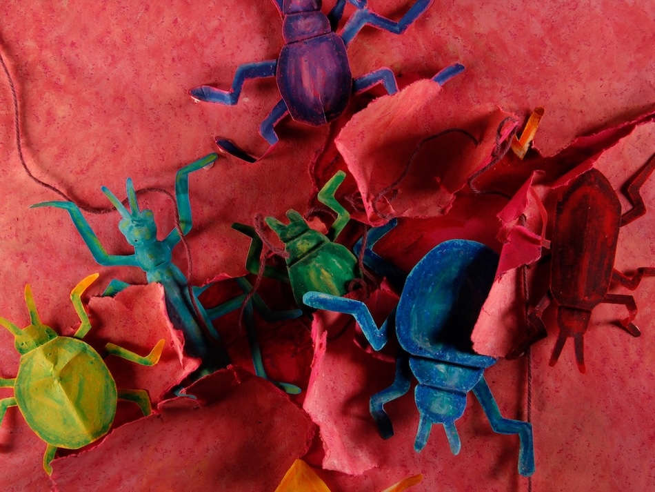

Foreign Bodies

2025 || 3min 30sec || Paper Cutout Stop Motion
A simple itch descends into an outbreak with many legs. Certain things will always find their way to the surface.
Graduation film from MA Character Animation at Central Saint Martins, University of the Arts London.
An exploration into the horror of having a body, of unbelonging.
Awards
- Best Student Short – Ethereal Horror Fest
- Honourable Mention for Gran Premio Ajayu – Ajayu International Animation Festival
- Honourable Mention for Best Student Film – Sea Slug Animation Festival
Selections
- StopTrik International Film Festival, Slovenia 2025
- Primanima World Festival of First Animations, Hungary 2025
- Cinemagic Film Festival For Young People, UK 2025
- Ethereal Horror Fest, USA 2025
- Piccolo Festival Animazione, Italy 2025
- Ajayu International Animation Festival, Peru 2025
- British Shorts Film Festival, Germany 2026
- Animatex, Egypt 2026
- Sea Slug Animation Festival, USA 2026
- Nevermore Film Festival, USA 2026
- FrightFest Glasgow, UK 2026
- Tricky Women Tricky Realities, Austria 2026
- Anilogue International Animation Festival, Hungary 2026
- Trans Image/Trans Experience Film Festival, Ireland 2026
- Stop-eMotionDays, Italy 2026
- Cardiff Animation Festival, UK 2026
- SI-FAN, UK 2026
- Anifilm, Czech Republic 2026
- Animafest Zagreb, Croatia 2026